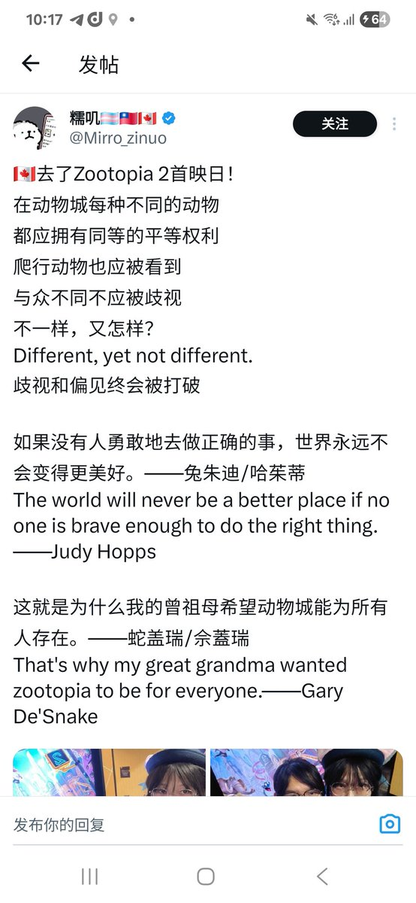

祐穂・H 「暂退网」
@HYuusui1999
@UMP91147621 感觉只是单纯想批评ta本人而不是观点了

大ばナナ
@UMP91147621
动物有你妈的权利呢😅动物都不是人类社会的主体，哪里来的权利 新左派跨畜就喜欢大搞所谓“平等权利”，实际上也没有人破坏他们的权利，是不让坐高铁飞机了？还是不让贷款了？没有任何法律是说因为你跨性别了就限制你权利 https://t.co/3Wvs7JAaZd